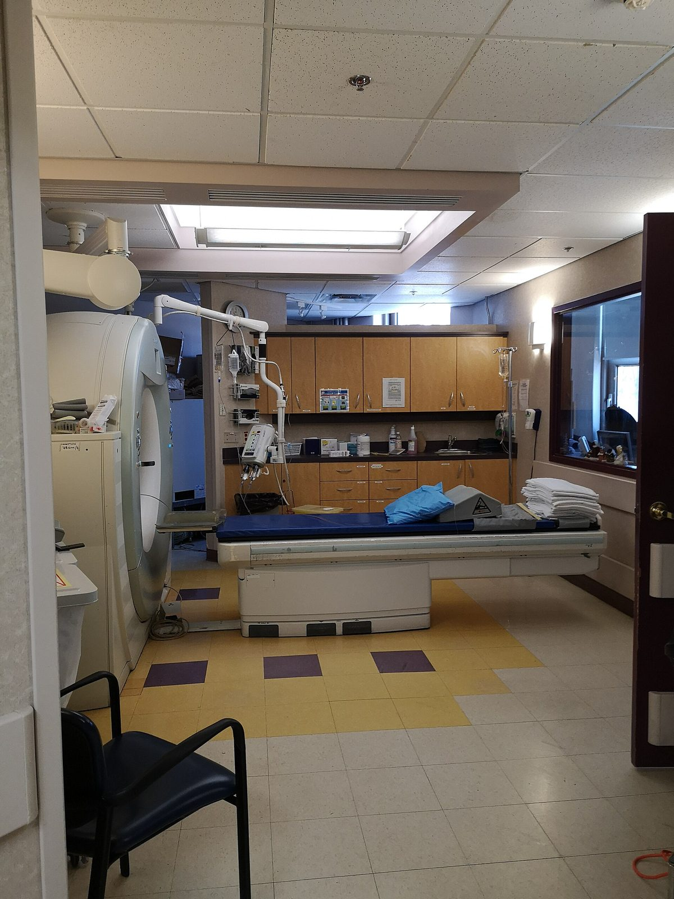
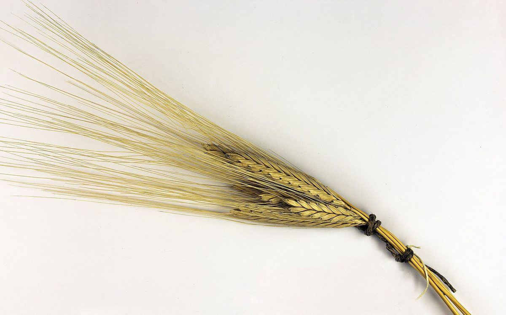
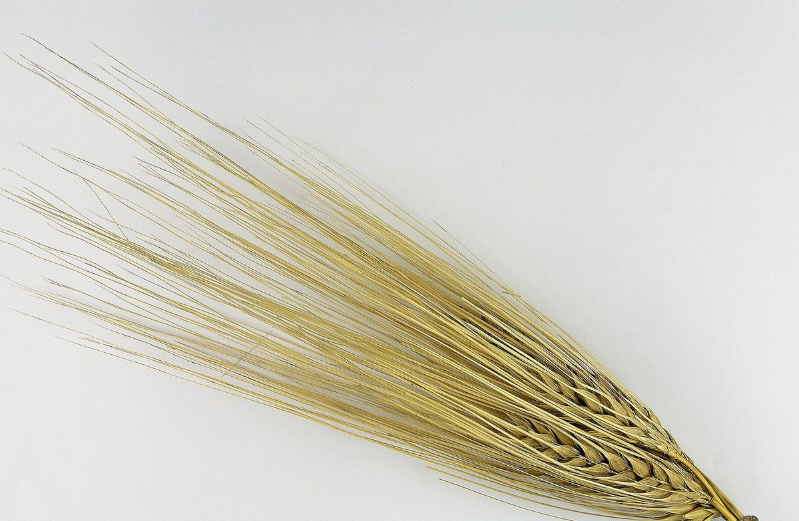
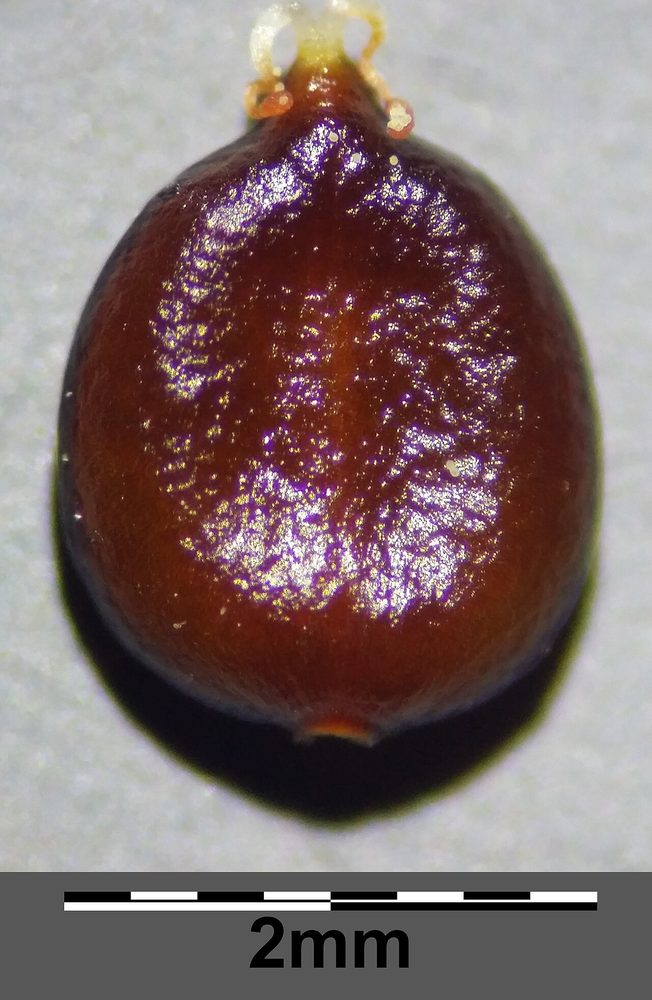
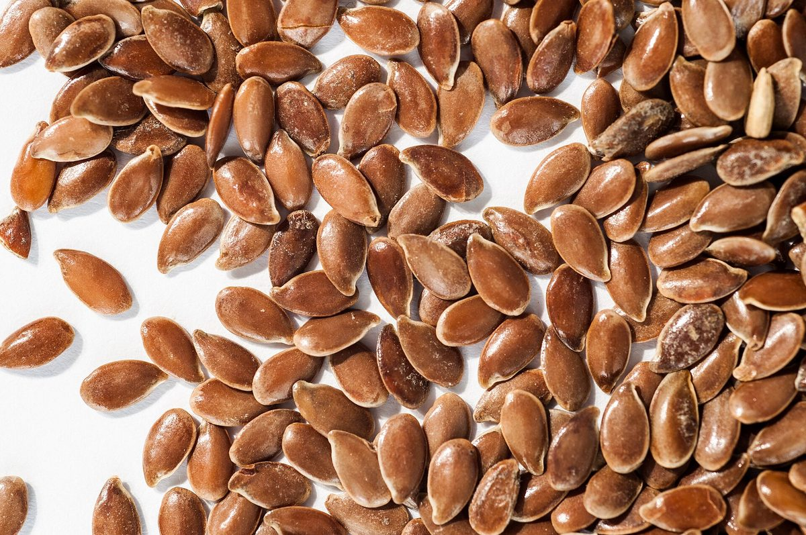

Unit 3 · Human remains · Lesson 3
Reading the remains: scientific analysis
How do scientists learn about people who died thousands of years ago while doing as little harm as possible to their bodies, and how sure can we be of what they find?
Year 11 Ancient History · Present with → or space · Read on a phone with R

Review · books closed · 6 minutes · press K for the timer
Five questions from Units 1–2 and Lessons 1–2
- Writing: fix this sentence so it judges how far, with a reason: “Human remains tell historians everything about a person.” For example: Human remains can tell historians a great deal about how a person lived and died, but only to a limited extent who they were: on their own they show age, sex, health, diet and injuries, not a name, feelings or beliefs. (A degree word, then the reason for it.)
- What can radiocarbon dating date, and what is one of its limits? Once-living (organic) material, such as bone, wood or charcoal, back to about 50,000 years. Limits: it cannot date stone or metal directly, and it gives a range that must be calibrated.
- Name four ways the bodies of the dead can survive. As skeletons; as cremated remains; preserved naturally (by ice, bog or dry desert sand); preserved deliberately (e.g. Egyptian mummification).
- Why do some bog bodies keep their skin but have soft or missing bones? The peat is cold, waterlogged, acidic and low in oxygen: the acid, and sphagnan (a substance from sphagnum moss), draw the minerals out of bone, while sphagnan and the lack of oxygen stop the bacteria that would rot the skin.
- Name one thing lost or damaged when Ötzi was taken out of the ice in 1991. His left hip was damaged by a pneumatic drill in a failed first attempt to free him, and with no archaeologist present, pieces of his clothing and equipment came out without being recorded where they lay.
Mark your own answers in a different colour. Which question did you find hardest?
Learning intentions and success criteria · 2 minutes
Today’s goals
- understand the methods scientists use to study human remains
- evaluate what scientific results can and cannot tell us
- match three methods to the questions they answer
- explain one result for Ötzi and one for Tollund Man, and how it was found
- judge how useful a scientific study is, using OVPRL
Syllabus outcomes: AH-11-05 analyses different types of sources for evidence to support a historical account or argument · AH-11-06 explains differing interpretations and representations of the past · AH-11-07 communicates historical understanding, applying historical knowledge, terms and concepts. Life Skills: AH-LS-08 uses sources to form conclusions about the past · AH-LS-11 communicates information about the past using historical terms and concepts.
Note-making · the routine for the whole course
How to structure your notes
questions and key terms, written after
short phrases, arrows (→ leads to), abbreviations (c. = about; BCE = before the Common Era)
- 1Rule up the page firstA cue column about a quarter of the page wide; title and date at the top; room for a summary at the bottom.
- 2Listen and look, then writeDon’t copy while a slide is being explained. Phrases, not sentences.
- 3Write your own notes at each ✎ checkpointThen compare with the model notes, one row at a time. Add what you missed in a second colour.
- 4Write the cue questions afterwardsUse exam verbs: explain, analyse, assess. To revise, cover your notes and answer the cues.
- 5Finish with a three-sentence summaryTwo checkpoints today: choosing a method · Ötzi’s evidence chains. Your OVPRL notes on the Tollund Man study go on the OVPRL routine page of your booklet.
Key vocabulary · add to the unit word wall
Words for reading the remains
| Methods | Meaning |
|---|---|
| non-invasive analysis | Study that leaves the remains intact, such as X-ray or CT scanning. |
| invasive analysis | Study that damages or removes part of the remains, such as cutting or taking samples. |
| minimally invasive | Taking only a very small sample, so that almost all of the remains stay intact (the sample itself is used up). |
| CT scan | Computed tomography: X-ray images taken from many angles to show the inside of a body in 3D without cutting it. |
| radiocarbon dating | Dating once-living (organic) material, such as wood, bone or charcoal, by measuring how much carbon-14 has decayed. |
| ancient DNA | Genetic material recovered from old remains, used to study ancestry, health and appearance. |
| isotope analysis | Measuring chemical traces in bones and teeth to learn about diet and where a person grew up or travelled. |
| Reading a study | Meaning |
|---|---|
| abstract | The short summary of a study, written by its authors and published at the start of it. |
| peer review | The checking of a study by other experts before a journal agrees to publish it. |
| press release | A short news story written by a university, museum or publisher to tell the public about a new study. |
| modality | Words that show how certain a claim is, such as may, probably, likely or suggests. |
1 · Choosing a method · I do — you met these methods in Unit 1, Lesson 3
Look without cutting, or take a tiny sample?
X-ray · CT scan · 3D imaging and special photography
The body stays whole. Machines record images; experts interpret them.
radiocarbon dating · ancient DNA · isotope analysis · stomach or gut contents
A very small sample is taken and used up; the rest of the body stays intact.
- 1Which question?What do I want to know about this person: when they lived, what they ate, how they died, where they came from?
- 2Which method can answer it?Each method answers some questions and not others.
- 3At what cost to the remains?Could a method that takes less, or nothing, answer the same question?
1 · Choosing a method · I do — fill in your methods matrix, one row at a time
The methods matrix: what each method can answer, and what it costs
| Method | Question it answers | Sample needed | Invasive? | Limits |
|---|---|---|---|---|
| X-ray | Is anything dense hidden inside: bones, old injuries, metal or stone objects? | none | no | a flat image of ‘shadows’, so parts overlap; less detail than CT |
| CT scan | What is inside, slice by slice and in 3D: organs, wounds, objects? | none | no | shows shapes and densities; experts must interpret what they see |
| 3D imaging and special photography | What does the surface look like: its shape, wounds, tattoos? (Ötzi’s 61 tattoos were mapped this way in 2015.) | none | no | records the skin and surface only (special light can show marks deep in the skin); a reconstruction made from it adds an artist’s interpretation |
| radiocarbon dating | When did this person live and die? | a small piece of bone, skin or tissue | minimally | gives a date range, not a year; the sample is destroyed |
| ancient DNA | Who were their ancestors? What might they have looked like? What diseases did they carry? | a small sample of bone, tooth or tissue | minimally | modern DNA can contaminate a sample; genes show likelihoods, not certainties |
| isotope analysis | Where did they grow up, and did they move? What did they eat over many years? | small samples of tooth enamel and bone | minimally | points to a region whose rocks and water match, not an exact place |
| stomach or gut contents | What was their last meal? Were they ill? | a small sample from the stomach or gut | minimally | shows only the last meal or two, not a lifetime’s diet; needs soft tissue to survive |
1 · Choosing a method · I do → cold call · use your matrix
Which method would you choose, and what would it cost?
Did Ötzi break bones that later healed?
X-ray or CT scan: bone shows clearly, and nothing is taken. (X-rays showed that he broke several bones in his lifetime, including ribs and his nose.)
Where did Ötzi grow up?
Isotope analysis of tooth enamel (formed in childhood) and bone: tiny samples, used up. (Result: a few valleys within about 60 km south or south-east of where he was found.)
When did Tollund Man die?
Radiocarbon dating of small samples of his bone, checked against an earlier date from his skin. (Result, 2018: 405–380 BCE.)
Why not simply cut the body open and look?
These were people, and each body is unique: whatever is cut away is lost for ever, and later scientists may have better methods. So researchers choose the least invasive method that can answer the question.
Notes checkpoint 1 of 2
Choosing a method
Write your own notes first. Then compare, row by row, and add what you missed in a second colour.
2 · Ötzi’s evidence chains · We do — you supply each step · cold call
How do we know Ötzi was shot? Claim → method → evidence → how certain?
Ötzi was killed by an arrow, not in a mountain accident.
X-ray (2001), then CT scans (2005): non-invasive, so nothing was taken from his body.
The museum: “… an X-ray revealed a flint arrowhead in his left shoulder, after which a 2 cm entry wound was discovered in his back.” “The arrowhead broke off when the arrow shaft was removed and is still in his body.”
Very sure that the arrowhead is there: it is still in his body. In 2003 the radiologists called it “the probable cause of the iceman’s death”; new CT scans in 2005 then showed that the arrow had injured a large artery under his left collarbone, so the museum now says that he “… bled to death within a matter of minutes”. Who shot him, and why, science cannot tell us.
“At first it was thought that Ötzi had died in an accident in the mountains.” He had been studied for ten years before the arrowhead was noticed in 2001, and four more before CT scans in 2005 showed the injured artery.
Sources: South Tyrol Museum of Archaeology, ‘The mummy’ (iceman.it) · W. A. Murphy Jr et al., ‘The iceman: discovery and imaging’, Radiology 226 (2003)
2 · Ötzi’s evidence chains · We do — you supply each step · cold call
What was Ötzi’s last meal? Claim → method → evidence → how certain?
Ötzi’s last meal was rich in fat, with wild meat and cereal.
CT first: “In 2009, his stomach was spotted during a re-investigation of CT scans …” (The stomach had moved up during mummification, so for 18 years no one had found it.) Then small samples from the stomach (November 2010), studied under the microscope and for ancient DNA, proteins and fats.
The 2018 study: “He seems to have had a remarkably high proportion of fat in his diet, supplemented with fresh or dried wild meat, cereals, and traces of toxic bracken.” Its press release: “The analysis identified ibex adipose tissue as the most likely fat source.”
Fairly sure of the foods, because several methods agree; the scientists still hedge (“seems”, “most likely”). It is one meal from his last hours, not his everyday diet.

Images: Isiwal (CC BY-SA 4.0) · Roger Culos (CC BY-SA 3.0). Full details on the last slide.
Sources: F. Maixner et al., Current Biology 28 (2018), abstract · Cell Press news release, 12 July 2018
2 · Ötzi’s evidence chains · We do — you supply each step · cold call
Who were Ötzi’s ancestors? Claim → method → evidence → how certain?
Ötzi’s ancestors were mainly early farmers whose families had come from Anatolia (modern Türkiye).
Ancient DNA from a small sample of his hip bone: his whole genome was read in 2012, then read again from the same sample in 2023 with newer, more accurate technology.
The 2023 study: “… he retained the highest Anatolian-farmer-related ancestry among contemporaneous European populations …” (that is, more than any other European of his time whose DNA has been studied).
Analyses of the 2012 genome had found traces of ancestry from herders of the eastern steppes. In 2023 the team read DNA from the same hip-bone sample again, with newer methods and far less modern contamination, and found none. The study concludes that the old steppe result “… is likely the result of modern human contamination”; the press release is blunter: “The reason for the inaccuracy: the original sample had been contaminated with modern DNA.” The new result is more reliable, but it could be refined again as more ancient genomes are read.
Sources: K. Wang et al., ‘High-coverage genome of the Tyrolean Iceman …’, Cell Genomics 3 (2023), abstract and full text · Max Planck Society press release, 16 August 2023
2 · Ötzi’s evidence chains · We do — what did Ötzi look like?
When results change: the scientists and the museum
… the Iceman likely had darker skin than present-day Europeans and carried risk alleles associated with male-pattern baldness …
Wang et al., Cell Genomics (2023), abstract · risk alleles = gene variants that raise the chance of a trait
Our previous image of Ötzi is also incorrect regarding his hair …
Max Planck Society press release, 16 August 2023
The famous figure in the museum is an attempt at interpretation, a suggestion of how we imagined the Iceman during his lifetime. … There are currently no plans to revise the reconstruction.
Elisabeth Vallazza, director, South Tyrol Museum of Archaeology, press release, 16 August 2023 · the figure was made in 2011 by the artists Adrie and Alfons Kennis · see it on the museum’s page: iceman.it
Whether this predisposition was apparent in the Iceman’s lifetime and how pronounced it was cannot be determined from the study.
the same press release, on the genes for baldness
Why might the museum keep its 2011 reconstruction? What does that show about reconstructions?
They disagree about his hair: the press release says the old image is wrong; the museum says the study cannot show whether he was balding in his lifetime. Genes show likelihoods, not a portrait, and the museum calls its figure an interpretation based on the research of 2011. A reconstruction is evidence of what its makers imagined from the evidence of their time, not direct evidence of how Ötzi looked.
Notes checkpoint 2 of 2
Ötzi’s evidence chains
3 · Tollund Man’s last meal · You do — read the study summary · 3 minutes
A scientific study: Tollund Man’s last meal (2021)

- Who: Tollund Man, an Iron Age man found by peat cutters in 1950 at Bjældskovdal, near Silkeborg, Denmark
- When he died: 405–380 BCE (radiocarbon dating of his bone and skin, 2018 study)
- The sample: “A few millilitres of material from the large intestine were taken for analyses …” (press release)
- Before: his gut contents were removed and first studied in 1950; in 2019–2020 the team re-analysed that stored material with newer methods
Underline every word that shows how certain the authors are.
Words that show how certain the authors are: some (= about) · probably · indicate · may · could possibly
The last meal of Tollund Man, a bog body from Early Iron Age Denmark, has been re-examined using new analyses of plant macrofossils, pollen, non-pollen palynomorphs, steroid markers and proteins found in his gut. Some 12–24 hours before he was killed, he ate a porridge containing barley, pale persicaria and flax, and probably some fish. Proteins and eggs from intestinal worms indicate that he was infected with parasites. Although the meal may reflect ordinary Iron Age fare, the inclusion of threshing waste could possibly relate to ritual practices. This re-analysis illustrates that new techniques can throw fresh light on old questions and contribute to understanding life and death in the Danish Early Iron Age.
Nina H. Nielsen (Museum Silkeborg) and six co-authors from the National Museum of Denmark, Moesgaard Museum and Aarhus University, ‘The last meal of Tollund Man: new analyses of his gut content’, Antiquity 95 (2021), pp. 1195–1212 · a peer-reviewed archaeology journal · macrofossils = seeds and plant pieces you can see; palynomorphs = microscopic plant and animal remains, such as spores and worm eggs; threshing waste = the weed seeds and chaff left over when harvested grain is cleaned



Images: Nils Jepsen (CC BY-SA 4.0) · Roger Culos (CC BY-SA 3.0) · Stefan Lefnaer (CC BY-SA 4.0) · BastienM (CC BY-SA 3.0). Full details on the last slide.
3 · Tollund Man’s last meal · check first · hinge question · hold up A, B, C or D on “3, 2, 1, show”
Which sentence reports the study’s finding most accurately?
- AThe study shows that Tollund Man certainly ate some fish in his last meal.
- BThe study suggests that Tollund Man probably ate some fish in his last meal.
- CThe study suggests that Tollund Man probably ate mostly fish in his last meal.
- DThe study suggests that Tollund Man probably ate some fish at every meal.
A drops the hedge: the proteins make fish probable, not certain. C gets the meal wrong: it was mainly a porridge of barley, with probably some fish. D overgeneralises: the study shows one meal, eaten 12–24 hours before he was killed, not his everyday diet.
3 · Tollund Man’s last meal · You do · 5 minutes · use the OVPRL routine on page 2 of your booklet
OVPRL notes on the 2021 study
The last meal of Tollund Man, a bog body from Early Iron Age Denmark, has been re-examined using new analyses of plant macrofossils, pollen, non-pollen palynomorphs, steroid markers and proteins found in his gut. Some 12–24 hours before he was killed, he ate a porridge containing barley, pale persicaria and flax, and probably some fish. Proteins and eggs from intestinal worms indicate that he was infected with parasites. Although the meal may reflect ordinary Iron Age fare, the inclusion of threshing waste could possibly relate to ritual practices. This re-analysis illustrates that new techniques can throw fresh light on old questions and contribute to understanding life and death in the Danish Early Iron Age.
Nina H. Nielsen and six co-authors · Museum Silkeborg, National Museum of Denmark, Moesgaard Museum, Aarhus University · peer-reviewed
Origin: who made it, when and where?
Nina Nielsen (Museum Silkeborg) and six specialists from Danish museums and Aarhus University · 2021 · Antiquity, peer-reviewed · re-examined gut contents first studied in 1950
Value: what can it tell us, for this inquiry?
His life and death: his last meal, 12–24 hours before he was killed (barley porridge with pale persicaria and flax, probably some fish) · his health (worms) · a possible link to ritual (threshing waste)
Purpose: why was it made, and for whom?
To report new results to other researchers and show that new techniques can answer old questions · for experts (the press release told the public)
Reliability: how far can we trust it, and for what?
Reliable for his last meal: many kinds of evidence studied (plant remains, pollen, steroid markers, proteins), two lines agree on the parasites (proteins and worm eggs), other experts checked it, claims hedged (“probably”, “may”) · less reliable for why he died: ritual is only a possibility
Limitations: what can it not tell us?
One meal, not his everyday diet · not who killed him or why · a summary: the detailed evidence is in the full article
3 · Tollund Man’s last meal · Writing focus · I do 2 · We do 2 · then apply it in your paragraph
Writing focus: match the verb to the strength of the evidence
The modality scale from Unit 1, for evidence verbs. Strongest to weakest: proves (almost never) · shows · indicates · suggests · may hint at. Match the verb to the evidence: one hedge per claim.
Worked example · written for this lesson · three claims on the scale
shows (high): An X-ray shows a flint arrowhead in Ötzi’s left shoulder, and it is still in his body.
indicates (medium): Ötzi’s 2023 genome indicates that his ancestors were mainly early farmers whose families had come from Anatolia, though new genomes could refine this.
may hint at (low): The traces of toxic bracken in Ötzi’s stomach may hint that he took it as medicine, but he may simply have wrapped his food in it.
Gesture vote on each claim: one finger = too weak · two = about right · three = too strong.
- Ötzi’s 2023 genome proves that he was bald when he died. Too strong. It shows genes linked to baldness, not whether he was bald: “indicates that he carried genes linked to baldness”.
- The steppe ancestry found in Ötzi’s 2012 genome might possibly suggest that the sample may have been contaminated. Too weak (three hedges stacked). The same sample, read again with far less contamination, showed no steppe ancestry, so the 2023 study says it “is likely the result of modern human contamination”.
- Samples from Ötzi’s stomach suggest that his last meal was rich in fat. About right. The scientists hedge too: he “seems” to have eaten a lot of fat.
For each of your two This Does That sentences, choose the verb from the scale: how strong is this evidence?
One hedge per claim. The modality scale is in your writing toolkit (booklet pages 3–4).
3 · Tollund Man’s last meal · You do · 9 minutes · press K for the timer
Your paragraph: how useful is this study?
- Answer: How useful is this study for understanding Tollund Man’s life and death?
- One paragraph, in OVPRL order, ending with a judgement.
- Include two This Does That sentences: the evidence (this) → a precise verb (does) → what it shows (that), with modality.
Verb how useful: value, reliability and limitations, all for this question · Topic the 2021 study · Limits for Tollund Man’s life and death only · Do an OVPRL paragraph that ends with how useful, for what
Published in … by …, this study … · Its value lies in … · It was written to … · It is reliable for … but not for … because … · It cannot tell us … · Overall, … · verbs: suggests, indicates, reveals · modality: may, probably, is likely to
How does Ötzi’s 2023 genome study (darker skin, probable baldness) challenge the museum’s 2011 reconstruction, which it kept, and what does that show about museum reconstructions?
The isotopes in Ötzi’s tooth enamel suggest that he grew up in one of a few valleys within about 60 km south or south-east of where he was found, although they cannot show which one.
Published in 2021 in the peer-reviewed journal Antiquity by Nina Nielsen of Museum Silkeborg and six specialists from Danish museums and Aarhus University, this study re-examined Tollund Man’s gut contents with methods far better than those used when he was found in 1950. Its value for understanding his life and death lies in its detail: the barley porridge in his gut suggests an ordinary Iron Age meal, eaten 12–24 hours before he was killed, although its threshing waste may hint at ritual. The worm eggs in his gut indicate that he carried parasites, which suggests that some of his food or water was contaminated. The study was written to report new results to other scientists, so its claims are carefully hedged. It is therefore reliable for what he ate in his last day, because it combines several kinds of evidence and other experts checked the work, but not for why he died, because the link to ritual is only a possibility. It cannot tell us his everyday diet, or who killed him. Overall, the study is highly useful for Tollund Man’s last day, but only partly useful for explaining his death.
Check · gesture vote · thumbs up = agree · down = disagree · sideways = not sure
Agree or disagree? Vote, then justify
“Science gives certain answers about the past.”
Some results are close to certain: the arrowhead is still in Ötzi’s shoulder. But many are probabilities (Ötzi “likely had darker skin”; Tollund Man ate “probably some fish”), some are possibilities (a link to ritual), and some change when methods improve (Ötzi’s 2012 genome most likely held modern DNA). Science gives evidence with a level of certainty, and a historian reports that level, using modality.
Finish your notes If time · or at home
Summary: three sentences
- How do scientists choose a method for studying human remains?
- What did science reveal about Ötzi and Tollund Man, and how?
- How certain are scientific results about the past?
Scientists choose a method by asking what they want to know and what each method will cost the remains, preferring non-invasive methods such as X-ray and CT, and taking only tiny samples for radiocarbon dating, DNA, isotopes or gut contents when they must. An X-ray revealed the arrowhead in Ötzi’s shoulder, samples from his stomach showed a high-fat last meal probably including ibex, and DNA shows mainly early-farmer ancestry, while gut samples suggest that Tollund Man’s last meal was a barley porridge, probably with some fish. These results range from almost certain to only possible, and some, such as Ötzi’s 2012 genome, have been revised, so historians must report how certain each result is.
Exit ticket · 4 minutes · before you leave
Two sentences
One scientific result for Ötzi or Tollund Man is …, found by …, and it is (almost certain / likely / possible) because …
One thing science cannot tell us about this person is … because …
1 · a real result (the arrowhead; the high-fat meal; early-farmer ancestry; the barley porridge) · the method that found it (X-ray; stomach samples; DNA; gut contents) · a level of certainty with a reason (still in his body; “most likely”; contaminated 2012 data; “probably”). 2 · something like their names, thoughts or beliefs, or why Tollund Man was killed, with a reason tied to what the methods can measure.
Then check yourself against today’s three “I can” statements. Next lesson: how museums preserve and display the dead.
Practice and review · 1 of 3 · true, false, justify
True or false? Justify your answer
- 1A CT scan takes a small sample from the body. False — it is non-invasive: X-ray images from many angles, with nothing removed.
- 2Isotopes in tooth enamel can help show where a person grew up. True — enamel forms in childhood and its chemistry reflects local rocks and water: for Ötzi, a few valleys south or south-east of where he was found.
- 3The 2021 study proved that Tollund Man was a human sacrifice. False — it says the threshing waste “could possibly relate to ritual practices”: a possibility, not proof.
- 4An early result about Ötzi’s DNA was later revised. True — the 2012 genome held modern DNA contamination; the 2023 genome, read again from the same bone sample with newer methods, found no steppe ancestry.
- 5Gut contents show what a person ate over their whole life. False — only the last meal or two (Tollund Man: 12–24 hours before his death); isotopes in bone show diet over years.
- 6Ötzi’s arrowhead was found as soon as his body was first examined in 1991. False — it was found only in 2001, on an X-ray, ten years after he was found. At first it was thought that he had died in an accident in the mountains.
Practice and review · 2 of 3 · writing
Write it as a historian
Write one sentence about Ötzi’s last meal: the evidence → a precise verb → what it shows, with modality.
The fat in Ötzi’s stomach, most likely from ibex, suggests that his last meal was high in energy, which may have helped him in the cold of the high Alps.
Finish: “The 2023 genome study is reliable for … but not for … because …”
The 2023 genome study is reliable for Ötzi’s ancestry, because newer methods gave a genome with very little modern contamination, but less reliable for exactly how he looked, because genes show only likelihoods, such as a risk of balding.
Too weak for the evidence. Rewrite with one hedge or none: “The 2005 CT scans might possibly suggest that the arrow may have injured an artery.”
CT scans in 2005 showed that the arrow had injured a large artery under Ötzi’s left collarbone.
How does Ötzi’s 2023 genome study (darker skin, probable baldness) challenge the museum’s 2011 reconstruction, which it kept, and what does that show about museum reconstructions?
Ötzi’s 2023 genome study challenges the museum’s 2011 reconstruction because it found that he “likely had darker skin than present-day Europeans” and carried genes linked to male-pattern baldness, and the Max Planck Society’s press release said that the earlier image of Ötzi was “incorrect regarding his hair”. Yet the museum kept its figure. Its director called it “an attempt at interpretation”, and the museum pointed out that the study cannot show whether the balding was visible in his lifetime, especially as locks of dark hair were found near his body. This disagreement shows that a museum reconstruction is not a picture of the past: it is evidence of what its makers imagined from the research of their time, and a museum may keep it after new results question it, as long as it presents it as an interpretation.
Practice and review · 3 of 3 · cover your notes and answer from memory
Quick checks
- What is the difference between non-invasive and minimally invasive analysis? Non-invasive methods (X-ray, CT, 3D imaging) leave the remains whole; minimally invasive methods take a very small sample, which is used up.
- Which method would you use to find out where a person grew up, and why? Isotope analysis of tooth enamel and bone: enamel forms in childhood, and its chemistry can be matched to the rocks and water of a region.
- How, and when, was the arrowhead in Ötzi’s shoulder found? On an X-ray in 2001, ten years after he was found; it is still in his body.
- Why did the results of Ötzi’s DNA change between 2012 and 2023? Sequencing technology had improved, and the 2012 genome held modern DNA contamination, which most likely caused its steppe result. The 2023 genome, from the same bone sample, shows the highest early-farmer (Anatolian) ancestry of any European of his time studied so far.
- What did Tollund Man eat in his last meal, according to the 2021 study? A porridge containing barley, pale persicaria and flax, and probably some fish, 12–24 hours before he was killed.
- Give one limitation of the 2021 Tollund Man study. It shows one meal, not his everyday diet; it cannot show who killed him or why; its link to ritual is only a possibility.
Sources and credits
Where everything comes from
Nina H. Nielsen et al., ‘The last meal of Tollund Man: new analyses of his gut content’, Antiquity 95 (383), 2021, pp. 1195–1212, abstract (doi.org/10.15184/aqy.2021.98; © the authors, Cambridge University Press, quoted for education). Aarhus University, ‘Research reveals recipe of Tollund man’s last meal’, press release, 7 August 2021 (mbg.au.dk). N. H. Nielsen et al., Radiocarbon 60 (2018), pp. 1533–1545 (doi.org/10.1017/rdc.2018.127).
F. Maixner et al., ‘The Iceman’s Last Meal Consisted of Fat, Wild Meat, and Cereals’, Current Biology 28, 2018, abstract (PubMed), and Cell Press news release, 12 July 2018 (EurekAlert). K. Wang et al., Cell Genomics 3, 2023, abstract (PubMed) and full text (PMC10504632). Max Planck Society, ‘Ötzi: dark skin, bald head, Anatolian ancestry’, 16 August 2023 (mpg.de). W. A. Murphy Jr et al., ‘The iceman: discovery and imaging’, Radiology 226, 2003 (PubMed). W. Müller et al., Science 302, 2003 (PubMed). A. Keller et al., Nature Communications 3, 2012 (PubMed). P. Pernter et al., ‘Radiologic proof for the Iceman’s cause of death’, Journal of Archaeological Science 34, 2007, pp. 1784–1786 (doi; Elsevier release on EurekAlert, 6 June 2007). EURAC Research, ‘New tattoos discovered on Oetzi!’, press release, 27 January 2015 (idw-online.de), on M. Samadelli et al., Journal of Cultural Heritage 16, 2015. US National Institute of Biomedical Imaging and Bioengineering, ‘Computed Tomography (CT)’ and ‘Medical X-rays’ (nibib.nih.gov; public domain). T. J. Painter, Carbohydrate Polymers 15, 1991. Museum Silkeborg, ‘Tollund Man and Elling Woman’ (museumsilkeborg.dk).
South Tyrol Museum of Archaeology, Bolzano: ‘The mummy’ and ‘The discovery’ (iceman.it), and ‘New DNA analysis for Ötzi’, press release, 16 August 2023 (iceman.it), where you can see its reconstruction. Each text is quoted briefly, word for word, with its citation; © its publisher.
Outcomes and content: NSW Education Standards Authority (NESA), Ancient History 11–12 Syllabus (2024). © NESA.
Teacher resources: Bog Bodies of Northern Europe and Human Remains as Historical Evidence (class notebook).
- A hospital CT scanner (Lachine Hospital, Montreal) · Photo: Ptrump16 · CC BY-SA 4.0 · source
- An Alpine ibex (Capra ibex) · Photo: Isiwal (Wikimedia Commons) · CC BY-SA 4.0 · source
- Einkorn wheat (Triticum monococcum), Muséum de Toulouse · Photo: Roger Culos (Muséum de Toulouse) · CC BY-SA 3.0 · source
- Bjældskovdal, Denmark: the find-spot of Tollund Man · Photo: Nils Jepsen · CC BY-SA 4.0 · source
- Six-row barley (Hordeum vulgare), Muséum de Toulouse · Photo: Roger Culos (Muséum de Toulouse) · CC BY-SA 3.0 · source
- A seed of pale persicaria (Persicaria lapathifolia) · Photo: Stefan Lefnaer · CC BY-SA 4.0 · source
- Flax seeds (linseed, Linum usitatissimum) · Photo: BastienM · CC BY-SA 3.0 · source


All images are openly licensed and were resized for the web (some also cropped). Each is shared under the licence shown. No human remains are shown in this lesson.